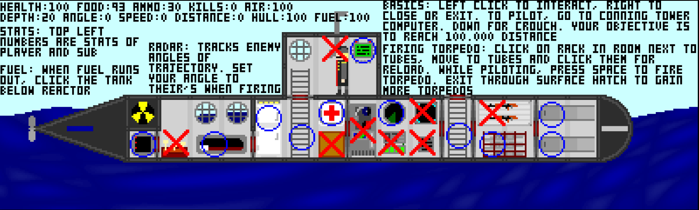

Submarine Game
Join me on a journey through my back catalogue of submarine games from novice pixel art to Russian Avant garde vector art and a couple of little prototypes!
Taking a nap under the great wide ocean.Our first stop is the version I built in Construct 2 wayyy back in 2016. It has confusing controls and is nowhere near finished, but there are a lot of neat features like being able to put torpedos back, go prone and break dance, even sleep in a bed! The reason I keep redrawing this game might be because it was the first "game" where I felt like I was really making a game.
 This is an ideal tutorial. I mean I even use the word "basics"! Who doesn't need a matching shark to go with the kitchen set?I got into this program called Hexels, and thus began to recreate the game in this new fangled thing called "isometric" perspective.
 Cross sections are way too much fun to make!
Cross section + gif = awesome
Cross sections are way too much fun to make!
Cross section + gif = awesome
I went to see a show of Russian Avant garde art and the palettes really spoke to me so I took another crack at the game art. Also tried a new effect for Hexels called Normal Map Shading.
Drew some characters during this time for the game.
If you got this far you deserve a secret. I tried to recreate the game in Pico-8 for a week. It's only got the walking, ladder climbing, and door slamming but it's fun little diversion.
I tried taking some newer art and making a game into it. Another prototype test, trying to figure out how sinking would work and proper submarine movement. Totally not a full game. If that interests you, link:
 Tiny posters for all you nuclear capitalist mariners.
Tiny posters for all you nuclear capitalist mariners.